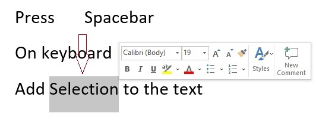
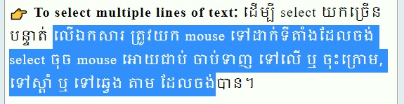

មេរៀនទី-៥
សេចក្តីណែនាំ (Introduction)
ប្រសិនអ្នកជាសិស្សថ្មី ដែកសិក្សាលើក វគ្ករដ្ឋបាល (Microsoft Word), ចាំបាច់ អ្នកត្រូវសិក្សា មូលដ្ឋានគ្រឹះ លើការ វាយអក្សរ, កែអក្សរ, និង ការរៀបចំអត្ថបទ, ការងារជាមូលដ្ឋាន រួមមាន យល់ពីរបៀប add, delete, move អត្ថបទ ក្នុងឯកសារ របស់អ្នក, តទៀតគឺ របៀប cut, copy ហើយនិង paste.
ការប្រើប្រាស់ (insertion point)ដើម្បីបញ្ចូលតួអក្សរ
the insertion point គឹជាបន្ទាត់ឈរ មួយដែលលោត ភ្លឹបភ្លែតៗ នៅលើផ្ទាំងឯកសារការងាររបស់យើង, វាគឺជាចំនុច កំណត់ទីតាំង ដើម្បីអោយយើងធ្វើការវាយបញ្ចូលអត្ថបទ, យើងអាចប្រើ insertion point ដើម្បីធ្វើកិច្ចការច្រើននៅលើការងាររបស់យើង
👉 Blank document: រាល់ពេលដែលយើងបើកម្មវិធី word ឡើងជាលើកដំបូង the insertion poipt និងបង្ហាញចេញនៅជ្រុងខាងលើ ផ្នែកខាងឆ្វេង នៃក្រដាសការងាររបស់យើង, ប្រសិនបើយើងចង់, គឺយើងអាចចាប់ផ្តើមវាយអក្សរពីចំនុចចាប់ផ្តើមនោះតែម្តង។
👉 Adding spaces: ដើម្បីធ្វើការ ដកឃ្លាលើ អត្ថបទ ត្រូវរំកិល insertion point ទៅកាន់ ទីតាំងណាមួយនៃអត្ថបទ បន្ទាប់មកចុច spacebar នៅលើ keyboard ដើម្បីដកឃ្លា។
👉 New paragraph line: ដើម្បីចុះបន្ទាត់ ត្រូវរំកិល insertion point ទៅកាន់ចុងអត្ថបទ បន្ទាប់មកចុច Enter លើ keyboard
👉 Manual placement: គ្រប់ពេលដែលយើងកំពុងធ្វេីការលើអត្ថបទ, យើងអាចប្រើ MOUSE ដើម្បី រំកិល insertion point ទៅចំនុចណាមួយនៅលើអត្ថបទ ដើម្បីបន្ថែមអក្សរចូលឬលុបអក្សរចេញបាន។
👉 Arrow keyas: យើងអាចប្រើ Arrow key នៅលើ keyboard បានផងដែរ ដើម្បីធ្វើការ បំលាស់ទី
insertion point, left and right arrow key សម្រាប់រំកិល insertion point ទៅឆ្វេង ឬស្តាំ រំលងអក្សរ មួយៗ
ដោយលែក up and down arrow key គឺសម្រាប់រំកិល insertion pont ឡើងលើ មួយបន្ទាត់ ឬចុះក្រោម មួយបន្ទាត់,
យើងក៏អាចប្រើ Ctrl+left ឬ Ctrl+right ផងដែរ ដោយរំកិល insertion point ទៅឆ្វេង ឬទៅស្តាំ មួយពាក្យៗ,
ចំពោះ Ctrl+Home និង Ctrl+End វិញ គឺសម្រាប់កំណត់ insertion point នៅដើមអត្ថបទ ឬនៅខាងចុងបំផុតនៃអត្ថបទ។
▸កំណត់សម្គាល់៖ នៅលើក្រដាសការងារទទេ ដើម្បីដាក់ insertion point នៅទីតាំងណាមួយ
ដែលយើងចង់បាន ត្រូវយក mouse ចុចពីរដង (double click) នៅកន្លែងនោះ
Selection Text
មុនពេលយើងធ្វើការកែប្រែ ឬ ផ្លាស់ប្តូរ អត្ថបទ យើងត្រូវតែធ្វើការ select លើវា
ដើម្បីធ្វើដូចនេះ យើងត្រូវ យកម្រាមដៃចង្អុលចុចអោយជាប់លើ mouse ឆ្វេង អូសទៅលើពាក្យឬ ឃ្លា ណាដែលយើងចង select បន្ទាប់ប្រលែង ម្រាមចេញវិញ
highlighted box នឹងបង្ហាញដូចខាងក្រោម៖
▸ចំណាំ៖ គ្រប់ពេលដែលយើងបាន select ទៅលើ រូបភាព ឬ អត្ថបទ
ផ្ទាំង hover toolbar ជាមួយនិង command shortcuts នឹងបង្ហាញចេញ, ក្នុងល័ក្ខខ័ណ្ឌណាមួយវាមិនបង្ហាញ យើងអាចធ្វើការ
select ឡើងវិញម្តងទៀត។

👉 To select multiple lines of text: ដើម្បី select យកច្រើនបន្ទាត់ លើឯកសារ ត្រូវយក mouse ទៅដាក់ទីតាំងដែលចង់ select ចុច mouse អោយជាប់ ចាប់ទាញ ទៅលើ ឬ ចុះក្រោម, ទៅស្តាំ ឬ ទៅឆ្វេង តាម ដែលចង់បាន។

👉To select all ដើម្បីធ្វើការ select យកតូអក្សរទាំងអស់លើឯកសារ, យើងអាចជ្រើសយក ឧបករណ៏ select នៅលើ Home Tap បន្ទាប់មកជ្រើសយក select all, ឬ អាច ចុច Ctrl+A នៅលើ keyboard ក៏បាន
▸កំណត់សម្គាល់៖ យើងក៏អាចធ្វើការ select យក មួយពាក្យៗ ដោយប្រើ mouse ចុចពីរដង double-clicking ទៅលើពាក្យដែលចង់ select បានផងដែរ, និង select ជា វគ្គឬឃ្លា នែអត្ថបទ ដោយចុច mouse បីដង(triple-clicking)។
To delete text:
មានវិធី បី ទៅ៤ វិធី ក្នុងការ លុប, ដកពាក្យ ឬ ឃ្លា ចេញពី អត្ថបទនៅលើ word
▸
ដើម្បីលុប តួអក្សរនៅខាងឆ្វេង insertion point ចេញ ត្រូវចុច Backspace key នៅលើ keyboard
▸
ដើម្បីលុប តួអក្សរនៅខាងស្តាំ insertion point ចេញ ត្រូវចុច Delete key នៅលើ keyboard
▸
លុប select text: select យកអត្ថបទចង់លុប ចុច Delete key នៅលើ keyboard
▸ចំណាំ៖ ប្រសិនបើយើង select លើអត្ថបទ ហើយវាយអក្សរបញ្ចូល, អត្ថបទដែលបាន select នឹង
ត្រូវលុបចេញដោយស្វ័យប្រវត្តន៏ និងជំនួសមកវិញនូវពាក្យថ្មីដែលយើងបានវាយ។
Copying and moving text
Word អាចអោយយើង ធ្វើការ ចម្លង(copy) អត្ថបទ មានស្រាប់លើឯកសារ ដើម្បីយកទៅ (Paste) កន្លែងផ្សេងបាន, វាអាចជួយកាត់បន្ថយពេលវេលា វាយអក្សរ បានច្រើន, ប្រសិនបើយើង ចង់ធ្វើការ ដក ឬដាក់ អត្ថបទ ក្នុងឯកសារ យើងអាចប្រើ cut and paste or drag and drop
👉 To copy and paste text:
▸
select យកអត្ថបទណាមួយ ចង់ ចម្លង (copy)
▸
ចុចយក Copy ឧបករណ៏ លើ Home Tap, ឬ ចុច Ctrl+C លើ keyboard
▸
កំណត់ insertion point លើទីតាំងណាមួយ ដែលចង់ (Paste)
▸
ចុចលើ Paste លើ HomeTap, យើងក៏អាច ចុច Ctrl+V លើ keyboard បានដែរ
👉 To cut and paste text:
▸
select យកអត្ថបទណាមួយ ចង់ កាត់ (cut)
▸
ចុចយក Cut ឧបករណ៏ លើ Home Tap, ឬ ចុច Ctrl+X លើ keyboard
▸
កំណត់ insertion point លើទីតាំងណាមួយ ដែលចង់ (Paste)
▸
ចុចលើ Paste លើ HomeTap, យើងក៏អាច ចុច Ctrl+V លើ keyboard បានដែរ
▸កំណត់សម្គាល់៖ យើងក៏អាចធ្វើការ cut, copy, and paste ដោយ right-click លើអត្ថបទ
ហើយជ្រើសយក មុខងារណាមួយ ពី drop-down menu. ពេលយើងប្រើមុខងារ paste លើចំនុចនេះ វាមានជម្រើស បី អោយយើងរើស គឺ
Keep Source Formatting, Merge Formatting, and Keep Text Only, យើងអាចយក mouse ទៅដាក់ពីលើដើម្បី
មើលមុខងារនិមួយៗ
👉 To drag and drop text:
▸
select យកអត្ថបទណាមួយ ចង់ រំកិល (Move)
▸
យក mouse ចុចអោយជាប់ទៅលើ ទីតាំងដែលបាន select ចាប់ទាញវា ទៅដាក់ទិតាំងផ្សេងណាមួយ បន្ទាប់មកប្រលែង mouse វិញ។
Undo and Redo
អាចនិយាយបានថា នៅពេលមួយដែលយើងកំពុងវាយអត្ថបទ លើឯកសារ វាមានហេតុណាមួយ
ដែលបណ្តា អោយយើងច្រឡំលុប ផ្នែកណាមួយនៃអត្ថបទ ជំនួសក្នុងការវាយអត្ថបទឡើងវិញ គឺអាច ធ្វើការ undo
▸ ដើម្បីធ្វើបែនេះបាន គឺយើងត្រូវ ចុច
ទៅលើ ឧបករណ៏ Undo មាននៅលើ Quick Access Toobar, យើងក៏អាចប្រើ Ctrl+Z នៅលើ keyboard បាន
ផងដែរ។ យើងអាចបន្តចុច Undo រហូតដល់ចំនុចមួយដែលយើងចង់បាន
▸ ចំពោះ ការប្រើឧបករណ៏ Redo ដើម្បីទាញយក
មកវិញ នៅអ្វីដែលយើងបានធ្វើលើ ឧបករណ៏ Undo ហួសផុតទៅ,ឧបករណ៏ Redo មាននៅលើ Quick Access Toobar ឬ អាចចុចCtrl+Y នៅលើ keyboard បាន
ផងដែរ។ យើងអាចបន្តចុច Redo រហូតដល់ចំនុចមួយដែលយើងចង់បាន
Symbols
ប្រសិនបើអ្នកត្រូវការបញ្ចូលតួអក្សរមួយចំនួន ដែលវាមិនមានប្រើតាមរយះ keyboard
ដូចជា copyright (©) ឬ trademark (™) symbols, អ្នកអាច ទាញយកវាមកប្រើបានតាមរយះ symbols
👉 To insert a symbols
▸
កំណត់ insertion point ត្រង់ចំណុចណាមួយ ដែលចង់ បញ្ចូល symbols
▸
ចុចយក insert Tab.
▸
ចុចយក symbols បន្ទាប់មកជ្រើសយក symbols ណាមួយយកប្រើ នៅ drop-down menu
(ប្រសិនអ្នករកមិនឃើញ symbols ដែលត្រូវការ អាចចុចលើ More Symbols...)
▸
កាបញ្ចូល symbols បង្ហាញដូចខាងក្រោម៖